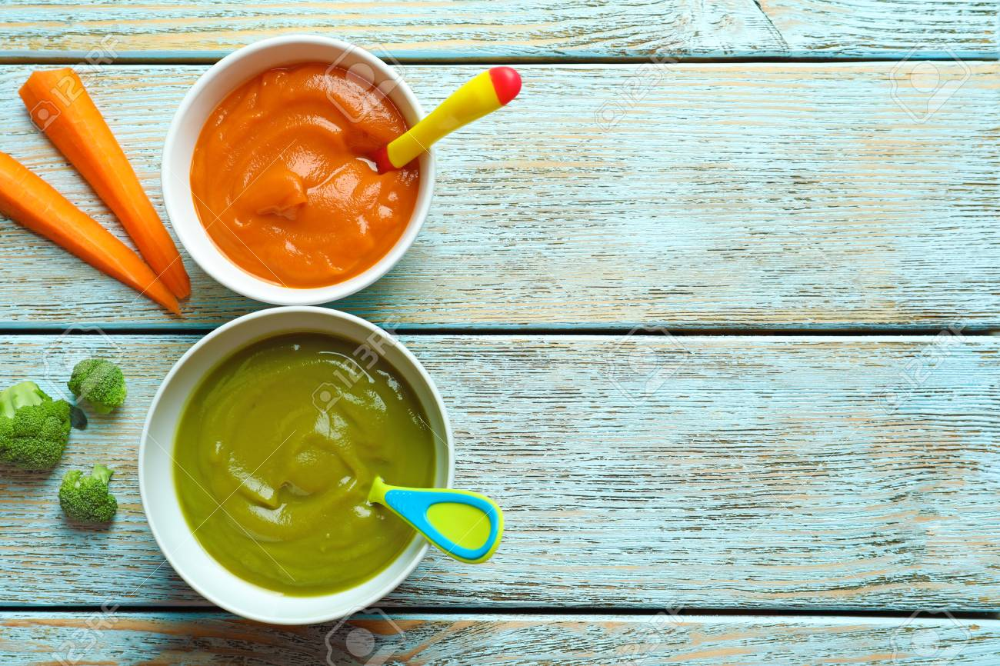
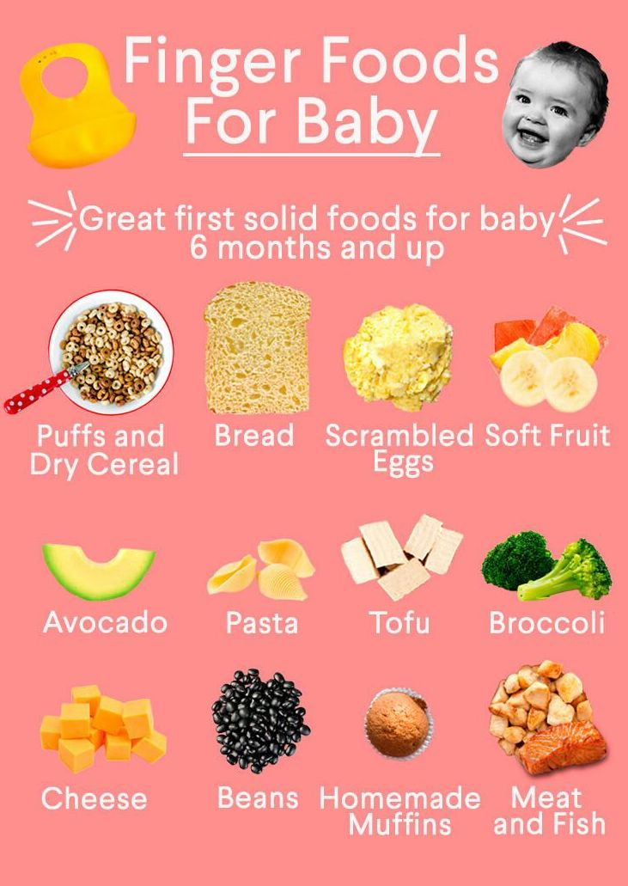

The American Academy of Pediatrics recommends watching for the following signs your baby is ready:
So once you see the above signs you can try solid foods. Otherwise wait for sometime.
Anyhow your baby is going to eat solids sooner or later. He/She needs some time. Dont worry!.
Untill then continue feeding Mother's milk or Formula milk.
To start with, infant cereal is the best first solid foods for babies. No need to stick with rice try other grains like oats and barley too. Rice cereal are easy to start but baby will get constipate after some days. To avoid this give oats cereal, rich in fiber. After oats, give other grains. Watch babies bowl movement. If anything abnormal, immediatly contact doctor.
Babies like pureed foods as their second solid foods. Pureed food can be fruits,veggies. To start with, give pureed apple,banana,blueberry, pear. In veggies Pureed carrots, peas, sweet potato. Once their body get use to these pureed foods, you can try other fruits and vegetables. Eventhough babies like solid foods, dont reduce mothers milk/Formula milk.

Finger foods are the foods once babies familier with solid food habits. These foods are Stage 2 foods. Slighty texted foods can be served to babies to feed by themself like bread pieces,small pasta pieces, steam cooked vegetable pieces, soft fruit pieces. Dont provide foods which is hard, it may lead to chocking.

Donot give cow's milk and honey to baby, eventhough baby can swallow. Its advisable to give these after one year with doctor's advice